Control Charts
The control chart is a graph that represents the variability of a process variable over time. Control charts are used to determine whether a process is in a state of statistical control, to find the causes of changes in a process, and monitor process performance. Control charts are also known as Shewhart control charts, after W.A. Shewhart (1931) who first introduced the concept.
A control chart consists of:
· A center line, drawn as a green line at the mean value for the in-control process (stable zone).
· Upper and lower control limits (UCL and LCL) – red lines. These control limits are chosen so that almost all of the data points will fall within these limits as long as the process remains in-control. Control limits are set at a distance of three sigma 3 (standard deviation) above and below the mean centerline. Default distance (3) can be overwritten using the “Control limits at these multiples of standard deviations” option.
· Data points representing a statistic for a subgroup (mean, range, proportion) or an attribute. A point outside the control limits indicates the presence of a special cause that deserves investigation.
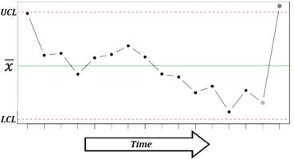
There are two basic types of control charts – control charts for attributes and control charts for variables. Following types of control charts are available:
Individuals and moving range charts
Control charts for subgroup averages
· X-bar chart
· R chart
· s chart
Time weighted control charts
· CUSUM chart
Control charts for attributes
· P chart
· C chart
· U chart
X-bar chart
X-bar chart is used to monitor the mean value of a process over time (between-sample variability). For each subgroup, the mean value is plotted.
Run: Charts→[Control Charts] X-bar and R Chart or X-bar and S Chart command.
Input variables: please see the Data layout for Xbar-R and Xbar-S charts section below for more details.
R chart
R chart is used to monitor the instantaneous process variability
at a given time (within-sample variability). Standard deviation, approximated
by the sample range is used as a measure of variability – for each subgroup,
the range 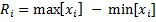
Run: Charts→[Control Charts] X-bar and R Chart command.
Input variables: please see the Data layout for Xbar-R and Xbar-S charts section below for more details.
Methods
The default (Rbar) estimate
for sigma is 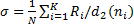
S chart
S chart is similar to R chart, but the standard deviation is directly estimated. S charts are preferable when a sample size is a variable or moderately large (N>10).
Run: Charts→[Control Charts] X-bar and s Chart command.
Input variables: please see the Data layout for Xbar-R and Xbar-S charts section below for more details.
Methods
The default (Sbar) estimate
for sigma is 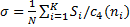
Data layout for Xbar-R and Xbar-S charts
Use the Data layout option to select how your data is organized.
|
1. Subgroups are defined by values of the Group variable 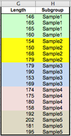 Select the Length variable as Measurements and the Subgroup variable as (Data Layout #1) Group. This layout allows using subgroups with unequal sizes. |
2. Single column with measurements, fixed subgroup size 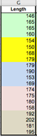 Select the Length variable as Measurements and enter 4 to the (Data Layout #2) Subgroup Size field. |
|
3. Subgroups across the columns, each column represents a subgroup 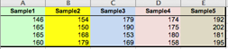 Select the Sample1–Sample5 variables (columns A:E) as Measurements. This layout allows using subgroups with unequal sizes. |
4. Subgroups across the rows, each row represents a subgroup 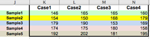 Select the Case1–Case4 variables (columns K:N) as Measurements. |
Workbook with samples is available through the Dataset link at the top of this page.
CUSUM chart
CUSUM chart (cumulative sum
control chart) is used for change detection monitoring. While control charts
for subgroup averages (X-bar, R and S charts) use information only from the
last sample and can detect process changes greater than 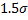
The cumulative sum of the deviations between each data point (a sample mean) and a reference value – target (T), is plotted. For the rth sample the cumulative sum is defined as:
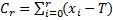
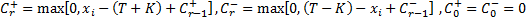
Allowance K is often chosen about halfway between the target T and the out-of-control value of the mean that we are interested in detecting.
Run: Charts→[Control Charts] CUSUM Chart command.
Select a variable with group codes and a variable with measurements.
Specify the target or
check the “Auto Select Target” option to use
the grand mean as the target estimate. A grand mean is calculated as 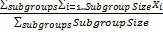
Specify the decision interval H (control limits). Default value of H is 4.
Specify the allowance K (also known as a slack value). Default value of K is 0.5, to detect one-sigma shifts in the mean.
Specifies which subgroup to center the V-mask on. The subgroups have indices starting from 1. Leave the default value – zero, to use the last subgroup.
P chart
P chart is used to monitor the proportion of defectives in a
process. The sample fraction nonconforming (proportion of defectives) is
defined as the ratio of the number of nonconforming units to the sample
size 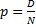 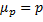 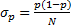 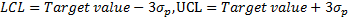 :
:
Run: Charts→[Control Charts] P Chart command.
Select a variable with subgroups sample size and a variable with defectives count (measurements) for each subgroup.
If the true fraction conforming p is known – specify the target value. When p is not known it is estimated with the grand mean.
C chart
C chart is used to monitor the total number of nonconformities per unit . Unlike the P chart, the C chart allows having more than one nonconformity per inspection unit, and requires a fixed sample size. The random variable follows Poisson distribution.
Center line is defined as 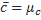
Run: Charts→[Control Charts] C Chart command.
Select a variable with measurements (number of nonconformities per unit).
U chart
U chart is used to monitor the average number of
nonconformities per unit 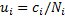 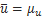
Run: Charts→[Control Charts] U Chart command.
Select a variable with subgroups sample size and a variable with defectives count (measurements) for each subgroup.
Individuals and moving range I-MR charts
Individuals control chart (I chart)
is used for process monitoring based on individual observations. The center
line represents an estimate of the process average (when unspecified, the
average of all the observations, grand mean, is used), and points on the
chart are the individual values. Control limits
are defined as 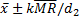 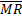
Moving range chart (MR chart)
monitors the between variation over time. Moving ranges represent point‑to‑point
variation and are defined as the absolute differences between consecutive
points. The number of points used to calculate a moving range is the moving
range length or span. For the default span value of two, 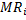 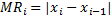 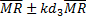
Run: Charts→[Control Charts] Individuals and Moving Range command.
Select a variable with measurements.
Optionally, change the method of estimating sigma.
References
Montgomery, D. (2005). Introduction to Statistical Quality Control. Hoboken, New Jersey: John Wiley & Sons, Inc.
Oakland, J. (2007). Statistical Process Control, 6th edition. Butterworth-Heinemann.
Page, E. S. (1954). "Continuous Inspection Scheme". Biometrika. 41 (1/2): 100–115.
Shewhart, W.A. (1931). Economic Control of Quality of Manufactured Products. Van Nostrand, New York and MacMillan, London (501 pages).
Wheeler, D. J. (2010). Individuals Charts Done Right and Wrong, Quality Digest.